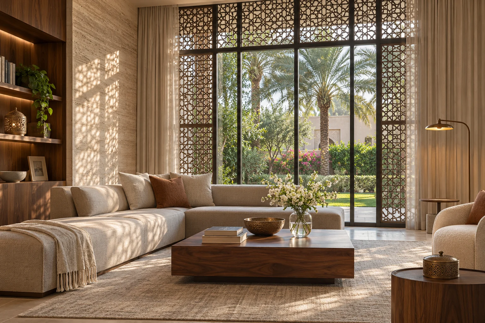

Human-Centric Lighting (HCL) & Circadian Rhythms in Modern UAE Luxury Villas
Plan bedroom lighting, daylight and smart lighting scenes for a UAE villa. Learn how light at the eye changes between breakfast, evening and night.

At breakfast, a shaded window can light a person’s face beautifully. At midnight, a small downlight visible from the pillow can feel uncomfortably bright. A ceiling plan alone describes neither experience. Human-centric lighting in a UAE villa starts with three questions: where are the occupants looking, when are they there, and what do they need to see?
Daylight, privacy and the position of the eye
Walk the villa at the hours the family actually uses it. In a west-facing family room the blinds may be closed all afternoon for glare or privacy. A lighting model with the glass fully exposed then describes a different home. Test the normal blind position and sit in the usual chair. A shaded courtyard, a translucent screen or light reflected from a pale wall can put useful light into the field of view without exposing occupants to a bright patch of sky.
Keep two quantities distinct. Horizontal illuminance tells you how much light reaches a book or countertop. Melanopic equivalent daylight illuminance (melanopic EDI) describes a spectral component of the light exposure at the eye. Two lamps can share a colour temperature and give different melanopic exposures. To evaluate a tunable-white system, request spectral data for the operating settings and assess the direction in which the person faces.
A daily scene schedule a family can live with
Morning. Start in the breakfast area or dressing room. Admit comfortable daylight first and use a lit wall or broad indirect source where the shaded interior needs support. Give someone making coffee a separate countertop circuit. That allows the task light to stay useful when the rest of the room is bright enough.
Evening. From the sofa, look towards the television, decorative pendants and the corridor beyond. Bring down large luminous surfaces and switch to shielded table lamps or local reading light. As an illustration, a warm chandelier run at full output can still deliver considerable light at the eye. Dimming level, shielding and viewing direction deserve as much attention as the Kelvin setting.
Night. Trace the route from bed to bathroom. Locate low-level light where it reveals the floor and changes in level. Check it with the bedroom door open, from both pillow positions and from standing height. Give the full bathroom lighting a separate manual control. Someone who needs more light for safe movement must be able to obtain it immediately.
Where research fits into a residential brief
For healthy adults with daytime schedules, expert recommendations discussed by the CIE use at least 250 lx melanopic EDI during the day, at most 10 lx in the three hours before sleep and at most 1 lx in the sleep environment. These are exposure references at the eye. A desk lux reading or a controller setting of 2700 K cannot establish that a target is met. Discuss different sleep schedules and visual needs before adopting numerical targets in a family home.
Commission the controls as carefully as the fittings
For a DALI or other smart lighting system, ask for a scene schedule with the time window, fixtures, dimming levels, colour settings and override behaviour. Agree what happens after a power cut or when a guest presses the wall control. A scene labelled “Evening” should still work if the internet connection drops. Put physical controls beside the bed and at entrances where a visitor can find them.
At handover, recall every scene with the normal blinds and furniture in place. Test low-end dimming for flicker and abrupt cut-off. Measure vertical light at representative eye positions if the brief includes melanopic targets, using suitable spectral measurements or validated spectral data. Record the settings the household prefers. A family’s evening during Ramadan, a late dinner or a guest stay may call for a different schedule, so give the owner a simple way to move the timing without reprogramming every room.
Discuss your lighting project with the studio ↗